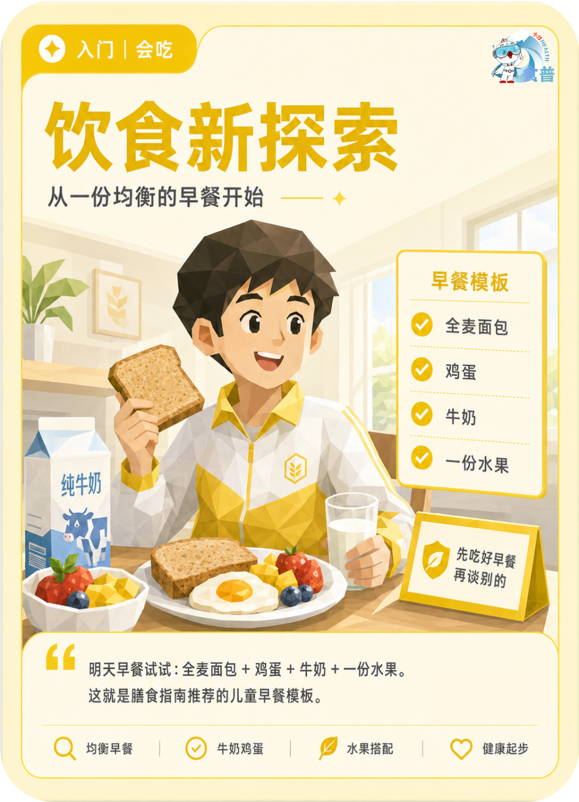

青少年与儿童
入门
会吃
K19
饮食新探索
从一份均衡的早餐开始
明天早餐试试:全麦面包 + 鸡蛋 + 牛奶 + 一份水果。这就是膳食指南推荐的儿童早餐模板。
手机端可点击“打开原图”后长按图片保存；也可以直接长按上方图卡保存。

从一份均衡的早餐开始
明天早餐试试:全麦面包 + 鸡蛋 + 牛奶 + 一份水果。这就是膳食指南推荐的儿童早餐模板。
手机端可点击“打开原图”后长按图片保存；也可以直接长按上方图卡保存。